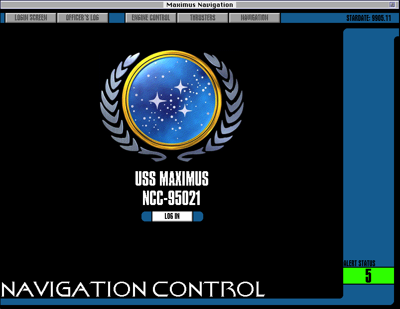
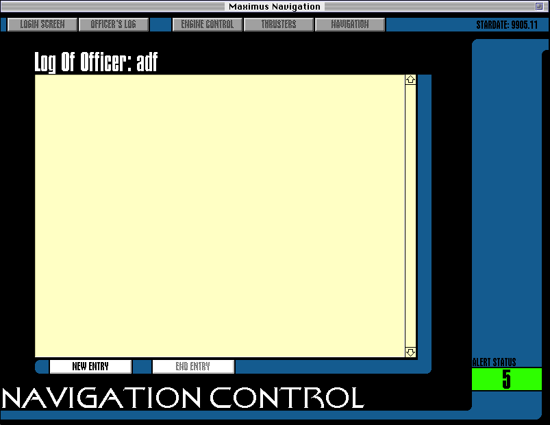
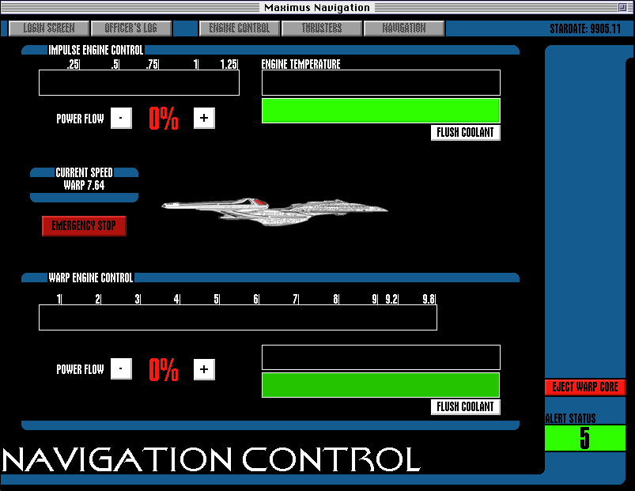
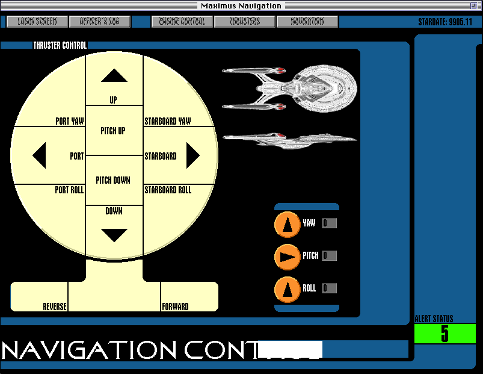
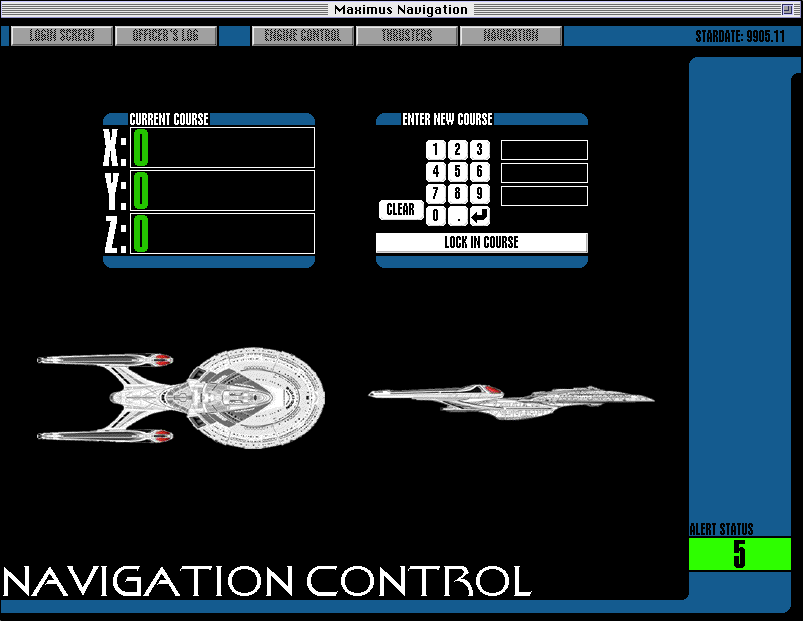
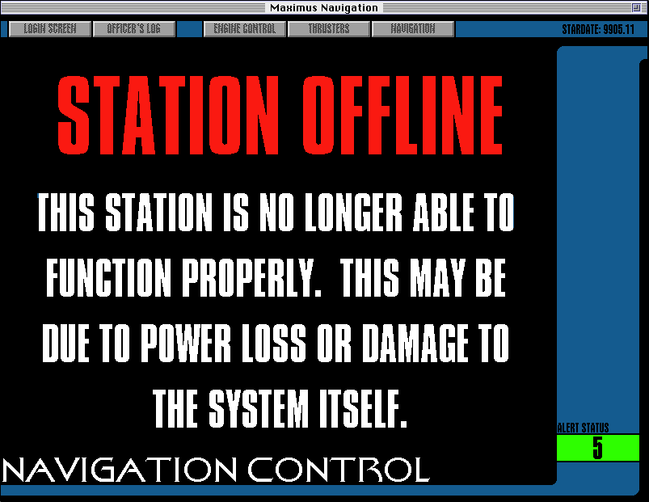
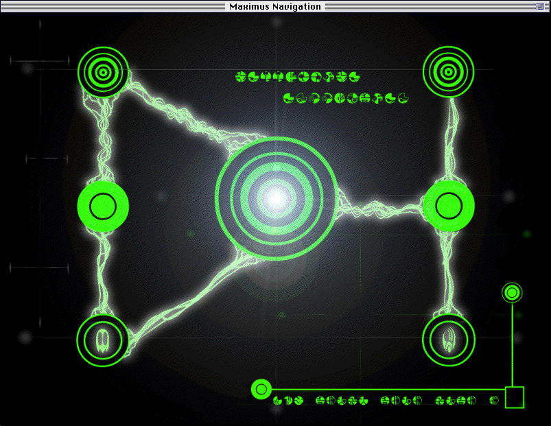

<h1>Navigation</h1>

<section id="login">
  <h2>Login</h2>
  <a href="login.png"></a>
</section>

<section id="officer-log">
  <h2>Officer Log</h2>
  <a href="officer-log.png"></a>
</section>

<section id="engine-control">
  <h2>Engine Control</h2>
  <a href="engine-control.png"></a>
</section>

<section id="thrusters">
  <h2>Thrusters</h2>
  <a href="thrusters.png"></a>
</section>

<section id="navigation">
  <h2>Navigation</h2>
  <a href="navigation.png"></a>
</section>

<section id="offline">
  <h2>Offline</h2>
  <a href="offline.png"></a>
</section>

<section id="borg-mode">
  <h2>Borg Mode</h2>
  <a href="borg-mode.png"></a>
</section>
